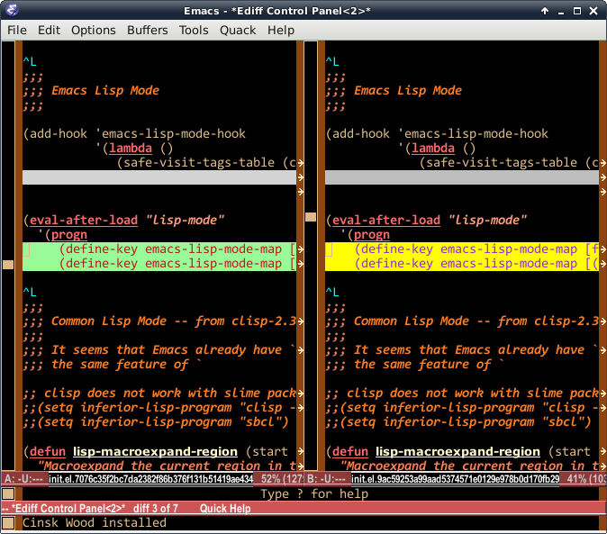
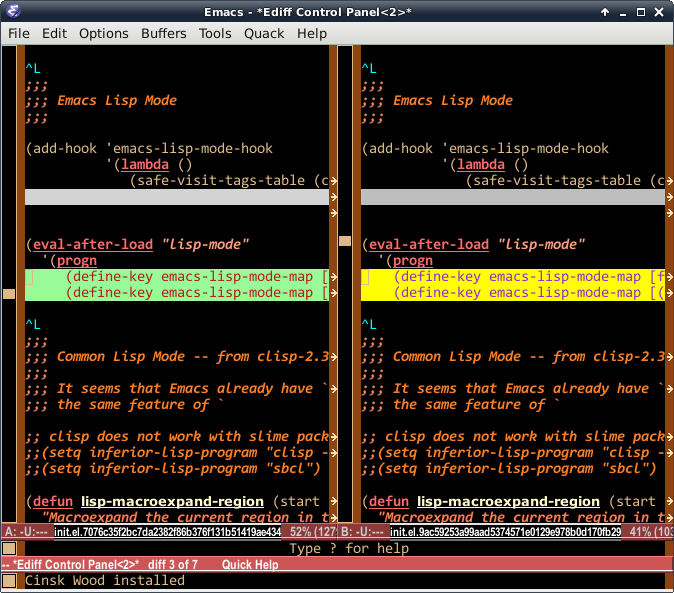

Preventing buffer overflows with strncpy, strncat, and snprintf
Preventing Buffer overflows
흔히 버퍼 오퍼플로우를 막기 위해 쓰는 함수가, strncpy(3), strncat(3),
snprintf(3)입니다. 이들 함수는 버퍼의 크기를 미리 지정받아, 복사할
문자열의 길이가 버퍼의 크기보다 클 경우, 복사를 중지해서 버퍼를
벗어나는 복사를 막아줍니다. 하지만, 버퍼의 크기를 해석하는 방식이
약간씩 다르다는 것이 문제입니다.
버퍼의 크기가 M이고, 복사해 넣을 문자열의 길이가 N이라고 합시다. 이 때
두 가지 경우를 생각할 수 있습니다. 첫째, 버퍼의 길이가 충분히 클 때
(즉, M > N), 둘째 버퍼의 길이가 짧을 때 (즉 M < N).
이 함수들을 검사하기 위해, 먼저 주어진 버퍼의 내용을 그대로 출력해 주는 함수를 만들어 봅시다. 보통 C 언어가 제공하는 문자열 함수들은 '\0'을 만나면 출력을 멈추기 때문에, 버퍼의 내용 전체를 알아 보기에는 좋지 않습니다. 따라서 다음과 같이 버퍼의 내용을 전체 다 출력해 주는 함수를 만듭니다 (필요한 표준 헤더 파일은 생략합니다):
void
memdump(const void *s, size_t size)
{
const char *p = (const char *)s;
const char *end = p + size;
while (p < end) {
if (isprint((unsigned char)*p))
putchar(*p);
else
putchar('.');
p++;
}
}
예를 들어 char buf[10]에 "ABCDEFGHI"가 들어있다고 가정하면,
memdump(buf, 10)은 다음과 같이 출력합니다:
ABCDEFGHI.
이제, 각각의 함수가 앞에서 다룬 두 가지 경우에 어떤 식으로 동작하는지
살펴봅시다. 먼저 첫번째 경우 (버퍼가 충분히 클 경우)를 알아보는 코드는
다음과 같습니다 (BUF_MAX는 매크로이며 10입니다):
memset(buf, '#', BUF_MAX);
strcpy(buf, "123");
memdump(buf, BUF_MAX); putchar('\n');
memset(buf, '#', BUF_MAX);
strncpy(buf, "123", 5);
memdump(buf, BUF_MAX); putchar('\n');
memset(buf, '#', BUF_MAX);
buf[0] = '\0';
strncat(buf, "123", 5);
memdump(buf, BUF_MAX); putchar('\n');
memset(buf, '#', BUF_MAX);
snprintf(buf, "%s", "123", 5);
memdump(buf, BUF_MAX); putchar('\n');
위 코드에서 문자열 "123"을 복사해 넣으면서, 버퍼의 길이는 5라고 치고 각 함수를 테스트합니다. 이 때, 출력은 다음과 같습니다:
123.######
123..#####
123.######
123.######
strncpy(3)를 제외하고, 나머지 세 함수는 예상대로 동작합니다. 즉 문자
'1', '2', '3'을 복사해 넣고, 문자열 끝을 알리는 '\0'까지 복사합니다. 이
네 문자 모두 버퍼의 길이라고 지정한 5보다 작기 때문에 문제는 전혀
없습니다. 하지만, 두번째 줄인 strncpy(3)는, 123을 복사해 넣고, 나머지
공간을 모두 '\0'으로 채운다는 것이 다릅니다! 즉, 버퍼가 충분히 클
경우에도, strcpy(3)와 strncpy(3) 동작 방식은 서로 다릅니다!
두번째 경우, 즉 버퍼가 충분히 크지 못할 경우를 살펴 봅시다. 이제
strcpy(3)의 경우, 테스트할 필요가 없으므로 뺐습니다:
memset(buf, '#', BUF_MAX);
strncpy(buf, "12345", 3);
memdump(buf, BUF_MAX); putchar('\n');
memset(buf, '#', BUF_MAX);
buf[0] = '\0';
strncat(buf, "12345", 3);
memdump(buf, BUF_MAX); putchar('\n');
memset(buf, '#', BUF_MAX);
snprintf(buf, 3, "%s", "12345");
memdump(buf, BUF_MAX); putchar('\n');
이 경우, 다음과 같은 출력을 얻을 수 있습니다:
123#######
123.######
12.#######
세가지 함수 모두 다르게 동작한다는 것을 알 수 있습니다. 먼저
strncpy(3)의 경우, 버퍼의 길이가 부족할 경우, 버퍼의 크기만큼 써
줍니다. 이 때 공간이 부족하더라도 '\0'을 써 주지 않습니다. 따라서
strncpy(3)의 경우, 완전하지 못한 문자열을 얻을 수 있습니다.
strncat(3)의 경우, 무조건 n개 문자를 복사합니다. 따라서 이 경우, 123을
복사한 다음 '\0'까지 써 줍니다. 사실 strncat(3)의 경우, 버퍼의 길이를
지정하는 것이 아니라, '\0'을 제외한 실제 복사할 문자의 갯수를 지정하는
것입니다.
snprintf(3)의 경우, strncat(3)과 다르게, 버퍼의 크기를
지정합니다. 따라서 버퍼의 길이가 짧을 경우, 그 버퍼의 길이 - 1개의
문자를 복사하고, '\0'을 써 줍니다. 즉, strncpy(3)와 다르게, 어떤
경우에도 '\0'으로 끝나는 올바른 문자열을 만들어 줍니다.
이제 이 차이를 알았으면, 실제 코드에서 어떤 식으로 써야 하는지 알아봅시다. 먼저 사용자가 입력한 문자열 somestring이 있다고 가정하고, 다음 코드를 보기 바랍니다:
char buf[LEN];
strncpy(buf, some_string, LEN);
자, 위 코드는 잘못된 코드입니다. 왜냐하면 somestring의 길이가 LEN보다 클 경우, buf에 들어가는 문자열이 '\0'으로 끝나지 않을 수 있기 때문입니다. 따라서 다음과 같이 써 주어야 합니다:
char buf[LEN];
strncpy(buf, some_string, LEN - 1);
buf[LEN - 1] = '\0';
다음 코드는 안전할까요?
char buf[LEN];
buf[0] = '\0';
strncat(buf, some_string, LEN);
아닙니다. strncat(3)은, 버퍼의 크기가 아니라, 복사할 문자열의 길이를
지정하는 것이므로, 마찬가지로 '\0'으로 끝나지 않은 문자열을 만들
가능성이 있습니다. 이것도 다음과 같이 써야 합니다:
char buf[LEN];
buf[0] = '\0';
strncat(buf, some_string, LEN - 1);
buf[LEN - 1] = '\0';
그럼 snprintf(3)를 쓴 코드를 봅시다:
char buf[LEN];
snprintf(buf, LEN, "%s", some_string);
위 코드는 안전할까요? 예. 그렇습니다. 안전합니다. snprintf(3)는 버퍼의
길이를 받아서 어떤 상황에서도 '\0'으로 끝나는 완전한 문자열을 만들어
줍니다.
안전한 프로그램, buffer overflow에 항상 신경써야 하는 코드를 작성한다면, 이와 같은 사항은 꼭 기억해 두어야 합니다. 그럼 이만.

 ]
]
 
